Введение
Северный морской путь (Севморпуть, СМП) активно развивается как внутрироссийский инструмент освоения Арктики, важнейший путь экспорта полезных ископаемых и транзитный маршрут из Азии в Европу. Чтобы вывести его на качественно новый уровень, государство готово выделять колоссальные средства.
Вместе с тем в этом глобальном проекте множество неизвестных. Планы предполагают масштабное строительство инфраструктуры — портов, ледоколов, транспортных судов ледового класса, собственного дноуглубительного флота, спутниковой группировки для прогнозирования ледовой обстановки и устойчивой связи, развитие системы речных и сухопутных подходов к портам.
Окупаемость зависит от развития грузовой базы — прежде всего арктических добывающих предприятий. Именно они выступают драйвером развития инфраструктуры СМП, которая должна сделать его более привлекательным в качестве международного маршрута.
На международных партнеров возлагаются серьезные надежды — чем больше иностранных судов проходит по СМП, тем увереннее можно ожидать участия зарубежных инвесторов в развитии портов, тем скорее СМП легитимизируется как международный маршрут под эгидой России.
В условиях, когда российские суда на международных маршрутах регулярно подвергаются арестам и нападениям, большое значение имеет российская юрисдикция на всем протяжении северного маршрута и присутствие ВМФ РФ.
Ряд прогнозов говорит о перспективах таяния арктических льдов. В этом случае транзит из Азии в Европу может пойти по альтернативным путям — Трансполярному и Северо-Западному, а Севморпуть останется внутрироссийским маршрутом. Причем юридические основания для полного контроля РФ над ним ослабнут, если льды перестанут покрывать его большую часть года.
Наши эксперты
Профессор, директор Центра арктической и северной урбанистики Высшей школы урбанистики факультета городского и регионального развития НИУ ВШЭ
Севморпуть имеет стратегическое значение для транспортной связности страны. Западную и восточную части соединяют, по сути, один Транссиб и идущее вдоль него шоссе. Если, не дай бог, что-то случится с этой магистралью, страна в транспортном отношении просто развалится пополам.
Интерес к Севморпути возникает в сложной геополитической ситуации, во время гражданской войны, например. Сейчас у нас опять сложная геополитическая ситуация, поэтому Севморпуть опять на первых страницах.
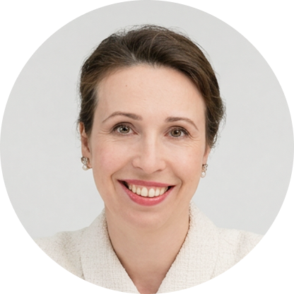
Кандидат юридических наук, доцент, директор Центра междисциплинарных исследований Арктики ИЭПРИК НИУ ВШЭ, старший научный сотрудник ИКСА РАН
Это наш стратегический приоритет и наше конкурентное стратегическое преимущество в текущих условиях. Арктика и СМП в числе самых весомых стратегически значимых активов России.
Да, это требует огромных капиталовложений. Но вопрос не в цифрах, вопрос в том, что для нас это стратегически значимый регион и маршрут, который позволяет его развивать в условиях геополитической гипернестабильности.
И еще один геополитический момент. Россия заинтересована в том, чтобы создать независимый от Запада транспортно-логистический маршрут. Возможность стыковки Севморпути, маршрутов Север — Юг и Владивосток — Ченнаи — это как раз новая логистика. И поэтому мы привлекаем партнеров из стран глобального Юга для того, чтобы в этом направлении двигаться. Поэтому для России СМП — это в какой-то степени инструмент формирования нового мирового порядка через глобальный Юг, через БРИКС и через логистику.
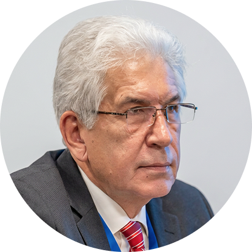
Директор консультационной компании ООО «Гекон», ведущий научный сотрудник отдела глобальных экономических проблем и внешнеэкономической политики ИМЭМО РАН, член экспертного совета комиссии Государственного совета Российской Федерации по направлению «Северный морской путь и Арктика», член научного совета Российской академии наук по изучению Арктики и Антарктики
У Северного морского пути есть задача — развивать российскую экономику. Это инфраструктурная часть, это часть нашей большой единой транспортной системы. Она обеспечивает освоение арктических территорий.
А вторая задача, не менее важная, — это обеспечить возможность переброски военно-морского флота на дальневосточный театр военных действий.
Правовой статус и границы Севморпути
Под акваторией Северного морского пути в Кодексе торгового мореплавания РФ понимается водное пространство, прилегающее к северному побережью РФ, охватывающее внутренние и территориальные воды и исключительную экономическую зону РФ (200 морских миль) от мыса Дежнева в Беринговом проливе до архипелага Новая Земля и пролива Карские Ворота. В него входят Чукотское море, Восточно-Сибирское море, море Лаптевых и Карское море.
Протяженность Севморпути от Карских Ворот до мыса Дежнева — около 5,6 тыс. км в зависимости от маршрута.
Северный морской путь — важнейший путь экспорта полезных ископаемых и транзитный маршрут из Азии в Европу
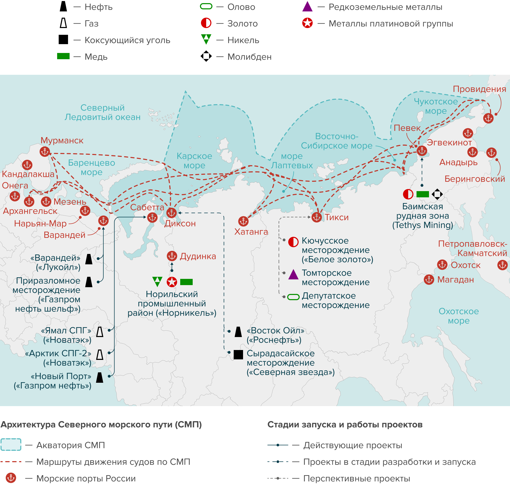
Позиция России: СМП — внутренние воды
Главное международно-правовое обоснование для контроля России над Северным морским путем — статья 234 Конвенции ООН по морскому праву «Покрытые льдом районы». Она позволяет прибрежным государствам устанавливать особые национальные правила прохода через территориальные воды и исключительную экономическую зону, если они покрыты льдом больше шести месяцев в году.
Эта статья не распространяется на Белое, Печорское и Баренцево моря, и юридически они в акваторию Севморпути не входят, хотя порты Архангельск (на Белом море) и Мурманск (на Баренцевом море) рассматриваются как ключевые западные терминалы СМП.
На основании статьи 234 законодательство России вводит жесткий национальный режим судоходства: разрешительный порядок прохода иностранных судов, строгие требования к ним, включая обязательный ледовый класс и квалификацию экипажа, сохранение права приостанавливать движение в случае экстремальной ледовой обстановки или угрозы экологической катастрофы. Ледокольную проводку осуществляет «Росатомфлот», ледоколы зарубежных стран на СМП не допускаются.
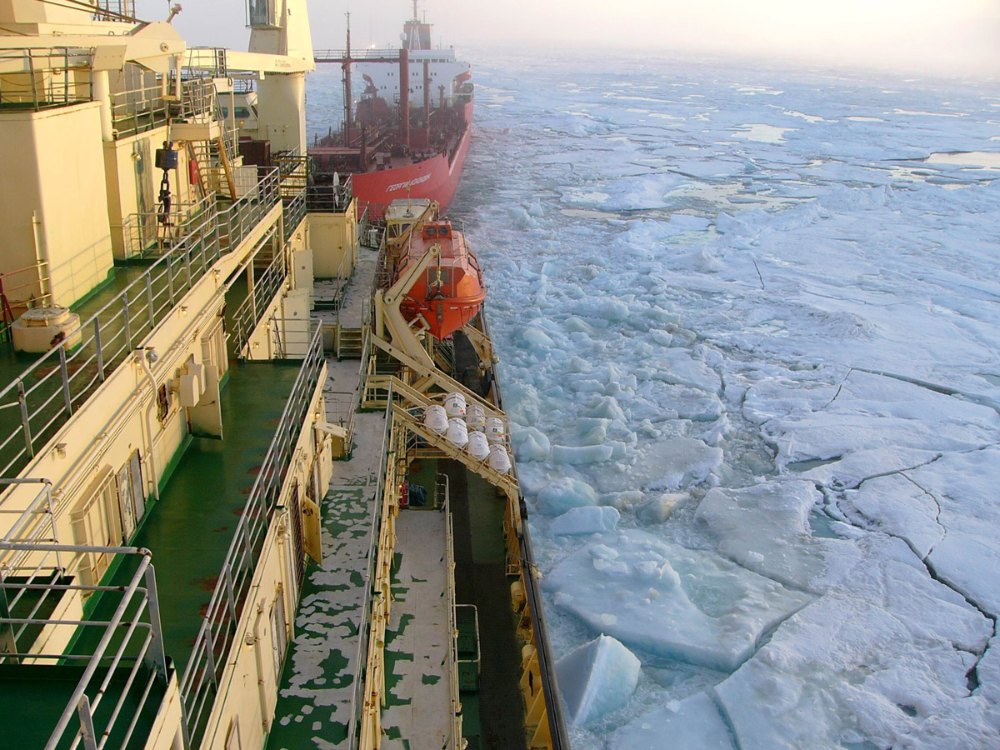
Претензии США и ЕС
Ряд стран во главе с США утверждает, что из-за глобального потепления и сокращения ледового покрова для многих участков СМП статья 234 теряет юридическую силу, так как лед больше не создает постоянных препятствий для судоходства.
Кроме того, существует спор о том, являются ли проливы СМП (например, Вилькицкого, Шокальского) внутренними морскими водами России или международными, где действует право транзитного прохода. Оппоненты полагают, что эти проливы используются для международной навигации между открытыми морями, и не признают нынешнюю ситуацию «исторически сложившейся», так как СМП используется относительно недавно. В соответствии с Конвенцией ООН по морскому праву сторонники этой концепции требуют беспрепятственного и бесплатного прохода, в том числе для военных кораблей.
Однако в практическую плоскость этот спор не выливается и демонстративных «миссий по защите свободы судоходства» (FONOP) ВМС США на СМП не предпринимают.
Вступление Швеции и Финляндии в НАТО обозначило окончательный поворот от Арктики как бесконфликтной зоны к разделу по линии Россия — НАТО. В феврале 2026 года альянс запустил миссию «Арктический часовой», нацеленную на усиление своего присутствия в Заполярье.
Китай — прагматическая позиция, собственные планы
В КНР Северный морской путь известен под именем «Полярный Шелковый путь» и рассматривается как часть инициативы Шелкового пути. В 2018 году Китай провозгласил себя приарктическим государством.
Китай одновременно декларирует уважение суверенитета арктических стран и приверженность свободе судоходства. Китайские специалисты не называют арктические проливы «внутренними водами РФ», используя нейтральные термины.
На практике китайские компании всегда выполняют требования России по судоходству на СМП, так как безопасность и стабильность для них важнее, чем споры о его принадлежности.
В Китае рассматривают Берингов пролив как фактор риска из-за возможности его блокирования со стороны США. Как сообщила South China Morning Post, Китай проявляет интерес к маршруту Синьцзян — Иртыш — Обь для доступа к СМП.
Китай исследует в высоких широтах перспективу открытия Трансполярного маршрута. По мнению китайских авторов, в ближайшие 30 лет он станет наименее затратным.
Позиция России такова: Северный морской путь — это исторически сложившаяся национальная транспортная коммуникация, коридор с национальным правовым режимом, и поэтому проход осуществляется по российским правилам под управлением нашего единого оператора — «Росатома».
Китай и остальные неарктические страны выступают за придание Северному морскому пути статуса международного транспортного коридора с международным правовым режимом, территории, которая должна быть доступна для использования всеми.
Поэтому они хотят установить не разрешительный порядок судоходства, а либеральный режим, чтобы не запрашивать у нас соответствующих разрешений.
Это категорически не укладывается в наши интересы, поэтому, безусловно, мы никогда не пойдем ни на интернационализацию Арктики, ни на интернационализацию СМП. В соответствии со ст. 234 Конвенции ООН по морскому праву, Россия, как прибрежное государство, не только имеет особые права, но и несет особую ответственность за сохранность этих территорий, покрытых льдом.
СМП и другие арктические маршруты
Северный морской путь — один из трех возможных маршрутов судоходства в Арктике. Помимо него существует Северо-Западный обход в территориальных водах Канады, а также Трансполярный морской путь. На данном этапе они труднопроходимы и по сравнению с СМП практически не освоены. Но ситуация может измениться с таянием арктических льдов.
Трансполярный маршрут
Трансполярный маршрут будет перспективен в случае таяния арктической шапки.
Трансполярный маршрут еще короче, чем СМП, он проходит гораздо севернее, вдоль кромки паковых нетающих льдов вокруг Северного полюса и соединяет Берингов пролив и Нордкап практически по прямой — по кратчайшей линии. Большая часть маршрута лежит вне исключительной экономической зоны России. В настоящее время по нему проходят лишь единичные экспедиции, так как он покрыт толстыми многолетними льдами.
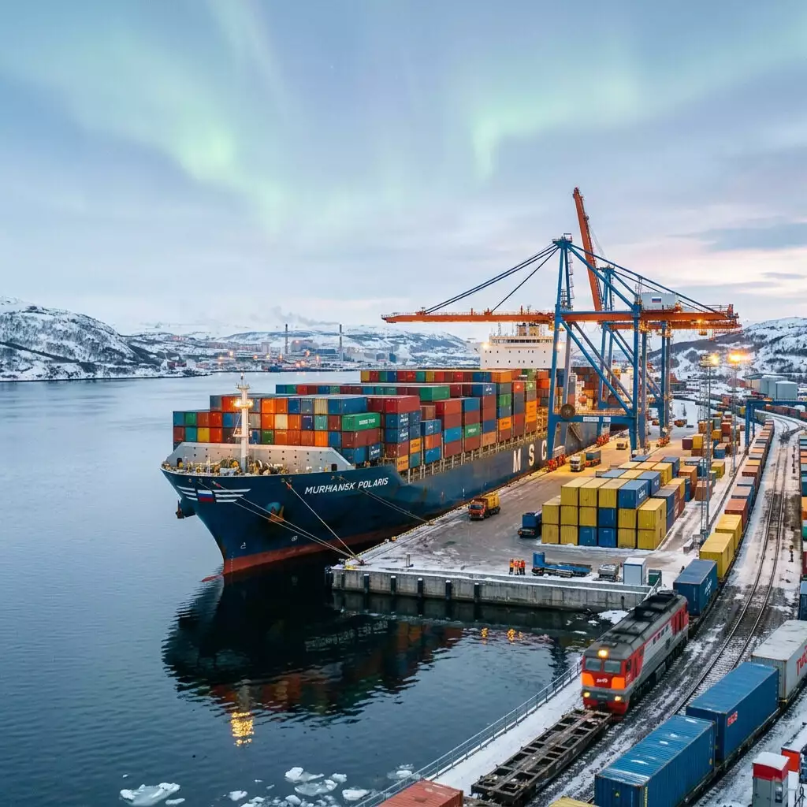
Северо-Западный проход
Северо-Западный проход соединяет Атлантический и Тихий океаны вдоль арктического побережья Северной Америки через Канадский Арктический архипелаг и обход Гренландии с юга. Ледовая обстановка на СЗП еще более тяжелая, чем на СМП, так как припайные льды у побережья Канады и Гренландии более стабильны и создают значительные препятствия судоходству.
Соглашение о безопасности, к которому Дональд Трамп принудил Данию и Гренландию осенью 2026 года, говорит о том, что США стремятся наращивать контроль в Арктике как со стороны Северо-Западного прохода, так и со стороны Трансполярного маршрута. Гренландия находится ближе всего к Северному полюсу и потому занимает в Арктике стратегическое положение.
Северный морской путь — лишь один из трех возможных маршрутов судоходства в Арктике
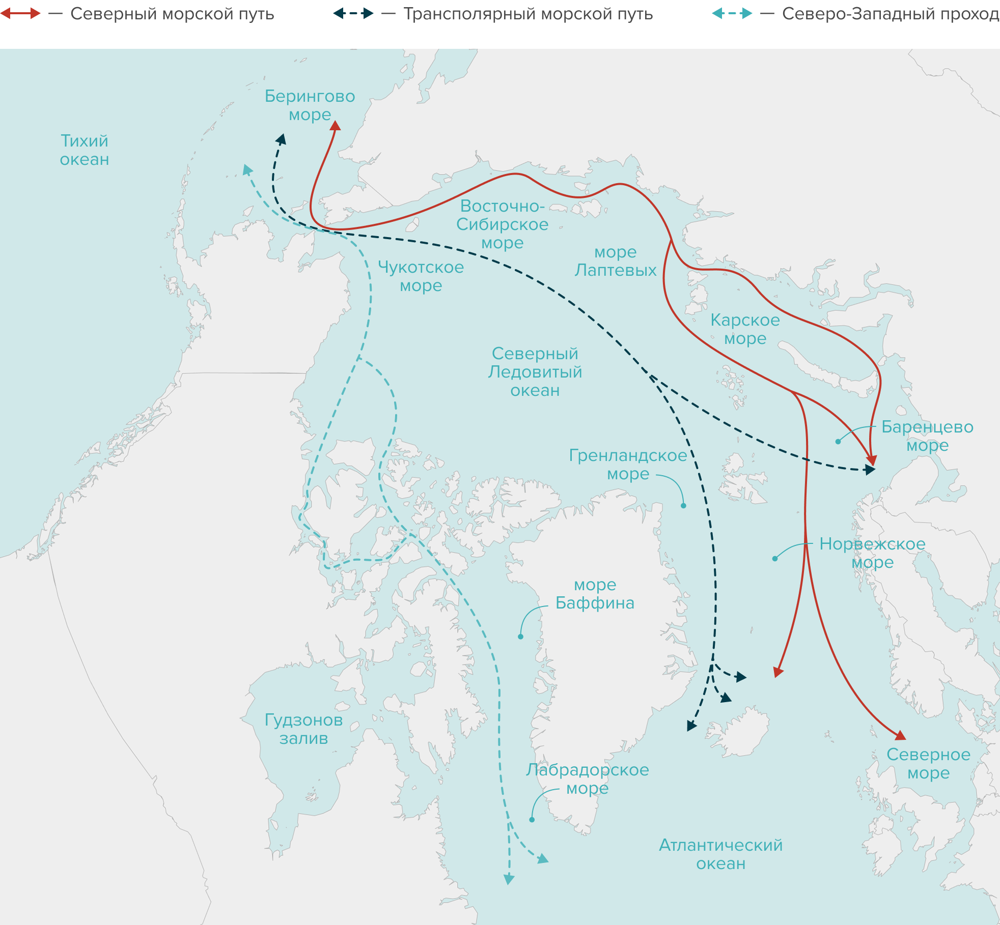
Перспективы таяния льдов
С начала XXI века Арктика потеряла треть ледяного покрова. Существуют разные прогнозы относительно того, когда может наступить первое «лето без льда» — под этим понимается, что в сентябре, когда ледяной покров СЛО минимален, он составит менее миллиона квадратных километров при нынешних 4,5 млн — это будет означать, что лед сохранился лишь у северного побережья Гренландии, и СЛО будет к сентябрю практически полностью судоходным.
Таблицу можно прокрутить по горизонтали.
| Параметр | ААНИИ (Россия)Арктический и антарктический научно-исследовательский институт | CMIP6/IPCCМежправительственная группа экспертов ООН по изменению климата | NOAAНациональное управление океанических и атмосферных исследований США |
|---|---|---|---|
| Первое исчезновение летнего льда | Не ранее 2050 года (сентябрьский лед точно сохранится) | До 2050 (при любом сценарии выбросов) | 2030–2040 годы, пиковая вероятность — в 2034-м |
| Базовая теория | Астрогеофизические циклы + природная изменчивость | Парниковая теория (антропогенное потепление) | Парниковая теория (антропогенное потепление) |
| Главный фактор влияния | Скорость вращения Земли, наклон оси, солнечная активность, глубоководные океанические течения | Концентрация парниковых газов, эффект альбедо | Концентрация парниковых газов, эффект альбедо |
| Динамика процесса | Колебательная (после потепления наступит фаза стабилизации) | Линейно ускоряющаяся (таяние льда ускоряет нагрев океана) | Линейно ускоряющаяся (таяние льда ускоряет нагрев океана) |
| Прогноз для СМП | Сохраняется абсолютная зависимость от мощного атомного ледокольного флота, круглогодичный транзит без сопровождения невозможен | Окно безопасной летне-осенней навигации для судов усиленного ледового класса (без ледоколов) расширяется до 3–4 месяцев. Появляются предпосылки для регулярных транзитных контейнерных перевозок между Азией и Европой | СМП теряет монопольное географическое положение единственного короткого арктического коридора, так как третьи страны выбирают Трансполярный маршрут |
Принятие того или иного сценария имеет большое значение при планировании развития СМП.
Климат, безусловно, теплеет. Причина непонятна, но то, что идет потепление, это факт. Однако даже в случае потепления, если не появится сплошного ледового покрова, будут торошения, будут плавающие льды. И в условиях торошения вести караван судов сложнее, чем по сплошному ровному льду. Поэтому в обозримом будущем условия судоходства на Севморпути вряд ли резко улучшатся, даже при потеплении.
Во многих прогнозах речь идет о том, что район Северного полюса освободится от льда, однако в районе Канады он там останется еще до 2050 года. И основной маршрут, который рассматривается на международном уровне, это отнюдь не Севморпуть, а путь, который пойдет ближе к Северному полюсу.
По реалистичному сценарию, климатические изменения будут более умеренные. Вызывают вопросы исследования, проведенные рядом американских ученых, в соответствии с которыми к 2050–2060-м годам Арктика полностью растает и отпадет необходимость получать разрешения на проход по СМП, — это крайне маловероятный сценарий, особенно если посмотреть на динамику таяния ледового покрова. Не все так однозначно, и, безусловно, учитывая цикличный характер изменения как ледового покрова, так и климата в целом, в ближайшее время Арктика не растает.
Институт географии Российской академии наук, ведущее учреждение в исследовании климатических процессов в арктической зоне, говорит следующее: ориентируйтесь на то, что будет так же, как сейчас. Это самое простое в условиях неопределенности прогнозов — будем считать, что все останется как есть.
СМП в контексте других морских маршрутов Европа — Азия
Севморпуть часто сравнивают с самым массовым судоходным маршрутом из Азии в Европу — через Суэцкий канал. По километражу СМП дает выигрыш перед Суэцким каналом и тем более перед маршрутом в обход Африки с юга.
Морские маршруты
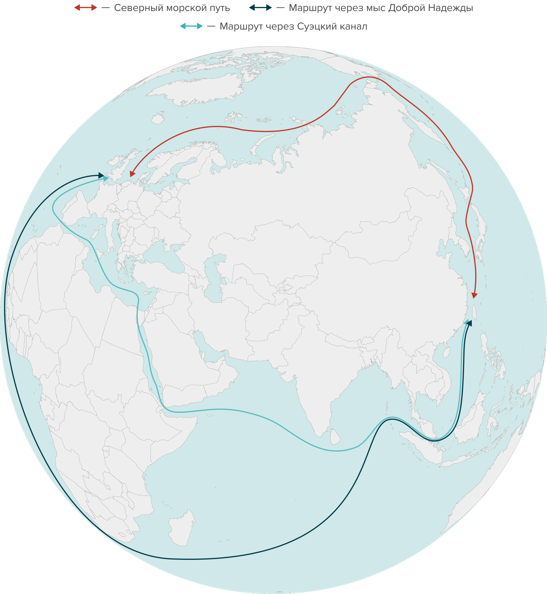
Маршрут через Суэцкий канал
До сих пор остается самым массовым маршрутом, соединяющим Европу и Азию. Однако в последнее время теряет свое главное качество — стабильность и предсказуемость, что привело к снижению грузопотока.
Несмотря на то, что маршрут через СМП короче на четверть, грузопоток через Суэцкий канал превосходит грузопоток СМП минимум в 20 раз, а международные перевозки — в 200 раз.
Маршрут через мыс Доброй Надежды
В настоящее время даже риски блокировки Суэцкого канала заставляют перевозчиков массово переключаться не на СМП, а на обход Африки с юга (мимо мыса Доброй Надежды). Этот путь значительно длиннее, но позволяет совершить его тем же судном (или даже большим) без ограничений по габаритам и требований к ледовому классу, не требует ледокольной проводки.
В целом как транспортная магистраль СМП с Суэцким каналом даже не сопоставим. Если мы говорим о транзите, то в год по Севморпути перевозится примерно такой же объем грузов, как в отдельный день через Суэц.
Севморпуть короче по километражу, но если по чистой воде судно идет в среднем со скоростью 12–15 узлов, то в канале за ледоколом — 4–5–6 узлов. То есть здесь выигрыш в километраже, но потеря в скорости, если Севморпуть покрыт льдом.
Таблицу можно прокрутить по горизонтали.
| Параметр | Северный морской путь (СМП) | Суэцкий канал | Обход Африки (мыс Доброй Надежды) |
|---|---|---|---|
| Расстояние (Шанхай — Роттердам) | ~14,8 тыс. км (8 тыс. миль) | ~19,5 тыс. км (10,5 тыс. миль) | ~26 тыс. км (14 тыс. миль) |
| Время в пути (при 14 узлах) | ~22–24 дня | ~31–33 дня | ~41–44 дня |
| Доступность для судоходства | Сезонная | Круглогодичная | Круглогодичная |
| Требования к судам | Ледовый класс, квалифицированный экипаж. Ограничения по ширине и осадке | Suezmax (ограничения по длине, ширине и осадке) | Рентабельно для больших судов VLCC/ULCC с высокой автономностью |
| Плата за проход по маршруту | Ледокольное сопровождение ($200–500 тыс. за один ледокол) | Пошлины (от $400 тыс. до $1 млн+) | — |
| Природные риски и задержки | Тяжелые льды, обязательное ледокольное сопровождение | Очереди на проход, риск блокировки судна в канале | Сильные штормы у берегов ЮАР, повышенный расход топлива |
| Геополитические риски | Санкционное давление на «Атомфлот» | «Ансар Аллах» (хуситы), сомалийские пираты | — |
| Предсказуемость | Метеоусловия предсказуемы, ледовая обстановка — возможны внезапные изменения | Информация об очередях доступна, геополитические форс-мажоры — внезапны | Метеоусловия предсказуемы |
В ближайшие 10 лет СМП не сможет стать полноценной альтернативой Суэцкому каналу по общему объему транзита. Суэцкий канал, конечно, сохранит статус глобальной транспортной артерии между Азией и Европой. Единственный вариант, когда СМП сможет стать не дополнением, а заменой Суэцкому каналу, — это если конфликт на Ближнем Востоке разразится настолько, что проход по СМП станет объективно более безопасным и более надежным логистическим вариантом. Но, скорее, все-таки нет.
В отдаленной перспективе Северный морской путь действительно имеет определенный потенциал стать сопоставимым по значимости транзитным маршрутом. Оптимистичный сценарий — только в случае ускоренного таяния льда, которое поможет сделать навигацию по СМП круглогодичной, а маршрут — более конкурентоспособным, и он оттянет на себя 10–15%, максимум 20% грузооборота.
Реалистичный сценарий — что климатические изменения будут более умеренными, и в ближайшее время Арктика не растает. В этом случае доля грузооборота СМП будет расти медленнее, может быть, даже меньше 8–10%.
В 2025 году сквозными рейсами через акваторию Северного морского пути было перевезено 3,2 млн тонн. Мы проанализировали весь транзит с 2010 до 2025 года. Да, действительно, в 2020–2021 годах он рос до 800 тыс. тонн.
До тех пор, пока хуситы не стали блокировать Суэцкий канал, через него проходило полтора миллиарда тонн в год. Значит, даже теперь будет полмиллиарда транзитных грузов. И наши 800 тыс. старые, до 2022 года. Дистанция огромного размера.
Что СМП может на себя перетянуть? Какие-то объемы, которые идут только из Восточной Азии и только в Северную Европу и северную часть Западной Европы.
Если говорить о том, что Россия имеет с транзита, то, как ни странно, это всего-навсего два вида фактически оказываемых услуг. Это ледокольная проводка и услуги ледовых лоцманов. Все остальное бесплатно, никто не имеет права взимать плату за прохождение по акватории. Разговоры о том, что страна будет зарабатывать и развиваться за счет транзита, — это все фантазии.
Западный и Восточный сектора СМП
Условия в западной и восточной частях Севморпути качественно отличаются, что позволяет говорить о Западном и Восточном секторах СМП. Их условно разделяет меридиан порта Дудинка. Протяженность маршрутов Западного сектора — около 1000 км, Восточного — 4500 км.
Таблицу можно прокрутить по горизонтали.
| Параметр | Западный сектор | Восточный сектор |
|---|---|---|
| География | Баренцево, Карское моря, Обская губа | Восточная часть Карского моря, моря Лаптевых, Восточно-Сибирское, Чукотское |
| Влияние океанов | Согревается теплыми течениями Атлантики | Охлаждается холодными массами Арктического бассейна |
| Период чистой воды | 3–4 месяца, на западе сектора льда может не быть вовсе | 1–2 месяца, лед часто не успевает растаять полностью |
| Тип льда | В основном однолетний, более тонкий | Преобладает тяжелый многолетний паковый лед |
| Опасные явления | Частые штормы, сильные туманы, обледенение судов | Ледяные сжатия, дрейфующие массивы, айсберги |
| Глубины | Глубоководный, малые глубины в устьях рек | Мелководные проливы, устья рек, шельф, отмели, мелкие острова |
| Порты | Развитая портовая инфраструктура | Слаборазвитая сеть укрытий |
| Судоходство | Круглогодичное (с поддержкой ледоколов) | Сезонное (зимняя навигация в процессе формирования) |
Запад Арктики значительно теплее за счет Гольфстрима и его ответвления — Нордкапского течения. Запад Баренцева моря, где расположен Мурманск, не замерзает круглый год, в Западном секторе лед в целом тает быстрее.
На востоке климат экстремально континентальный и суровый, средние температуры зимой намного ниже.
В Восточно-Сибирском море и море Лаптевых формируются устойчивые ледяные массивы, которые не успевают растаять за лето. Проливы Восточного сектора очень мелководны. Крупнотоннажным судам с большой осадкой приходится обходить их с севера, продвигаясь ближе к тяжелым океаническим льдам.
Западный сектор гораздо глубже, что упрощает движение судов класса Yamalmax. На западе ледоколы работают преимущественно на фиксированных маршрутах (до Сабетты и Дудинки). В Восточном секторе движение судов без мощных атомных ледоколов проекта 22220 («Арктика», «Сибирь», «Урал») в зимне-весенний период невозможно из-за большой толщины льда и торосов.
В Западном секторе достаточная плотность современных средств связи, баз МЧС и портов. На востоке порты расположены гораздо реже, основной хаб — Певек. Гидрографическая изученность дна и навигационная сеть уступают западным регионам.
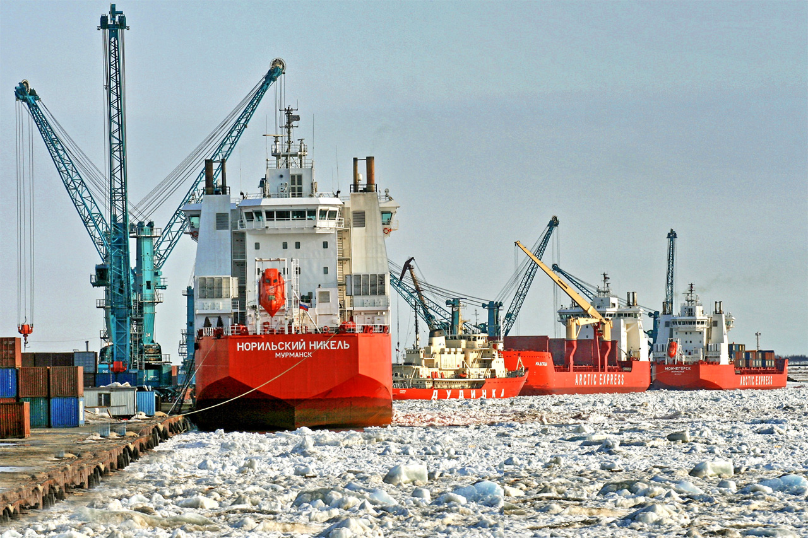
Схема расположения ледяных массивов арктических морей
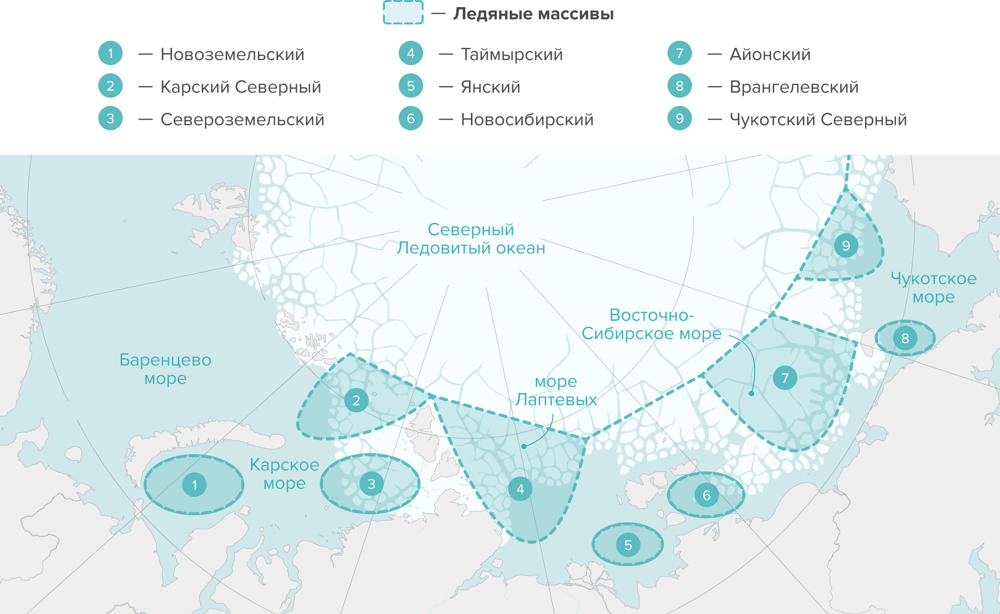
Если на западном направлении круглогодичная навигация обеспечена еще в 1978 году благодаря деятельности «Норникеля», то восточное до недавнего времени использовалось лишь сезонно, три месяца в году, с июля по начало октября.
Когда говорят о превращении всего СМП в круглогодичный маршрут, имеется в виду прежде всего задача обеспечить всесезонное судоходство в Восточном секторе, и ее решение уже несколько лет откладывается на более поздний срок.
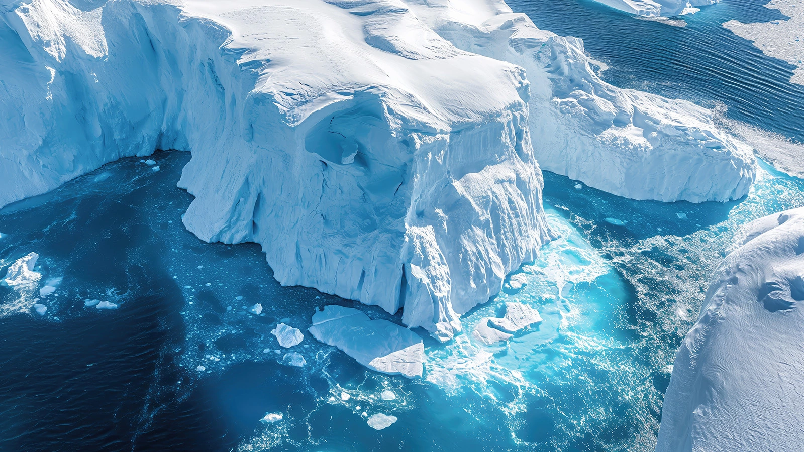
Три функции СМП и грузооборот
Динамика объемов перевозок основных видов грузов
в млн тонн
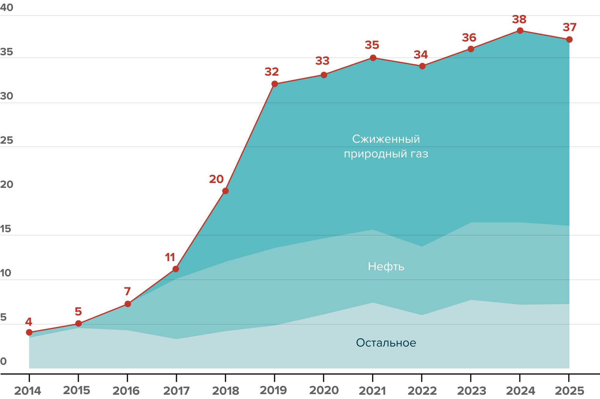
В структуре перевозимых грузов 86% составляют СПГ и газоконденсат, нефть и нефтепродукты. Доля рудного концентрата, угля и прочих навалочных грузов не превышает 3%. Еще 11% приходится на генеральные и контейнеризированные грузы.
Структура грузопотока Севморпути в 2025 году по видам грузов
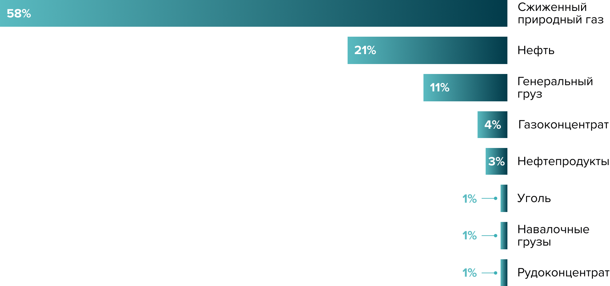
На сегодняшний день большая часть полезных ископаемых вывозится в западном направлении с использованием круглогодичного маршрута. В восточном направлении идет лишь 12% грузов, главным образом — в период летне-осенней навигации.
Прогнозирование грузооборота СМП необходимо для планирования инвестиций и расчета окупаемости вложений. Вместе с тем этот показатель превратился в своеобразный KPI Севморпути, и бюрократическая система делает его рост самоцелью, невзирая на объективные факторы — грузовую базу арктических добывающих проектов, реальные возможности инфраструктуры, перспективы международного транзита.
В сентябре 2026 года «Роснефть» запустила отгрузку в танкеры нефти «Восток Ойл» с терминала «Бухта Север», рассчитанного на 30 млн тонн в год, а в перспективе — до 100 млн тонн. Однако эксперты сомневаются, что терминал сразу выйдет на проектную мощность в силу неготовности ресурсной базы и недостатка в танкерах арктического класса.
Дело в том, что судов нет в принципе. Если говорить о «Восток Ойл», то где-то к 2035 году он выходит на 57 млн тонн. И затем идет снижение. Мы оценили потребность в судах для этого проекта в 19 танкеров, дедвейт — 120 тыс. тонн, и четыре перевалочных комплекса в районе Мурманска.
Сейчас по плану Минпромторга предусмотрено строительство только семи судов, причем это называется «перспективная потребность», и все это горизонт 2028–2030-го, 2031 года. Денег нет, проекта нет, строить непонятно где. Возникает вопрос, чем возить. Но самое главное, что возить-то нечего, геологическая модель до конца не понятна. Поэтому неясно, какой объем грузопотока мы все-таки можем ожидать на горизонте 2030–2031 года.
Транзит по СМП
Использование СМП в качестве транзитного коридора упало до нуля в 2022 году на фоне начала СВО. С этого момента в статистике Главсевморпути транзитом называются как международные рейсы между двумя зарубежными странами, так и рейсы, проходящие через обе границы СМП — западную и восточную (например, из Шанхая в Архангельск). В терминологии Севморпути такие рейсы называются не транзитными, а «сквозными».
Главсевморпуть в 2022 году изменил принцип подсчета числа и объемов транзитных рейсов через Северный морской путь
Число транзитных рейсов в 2010–2025 годах
в шт.
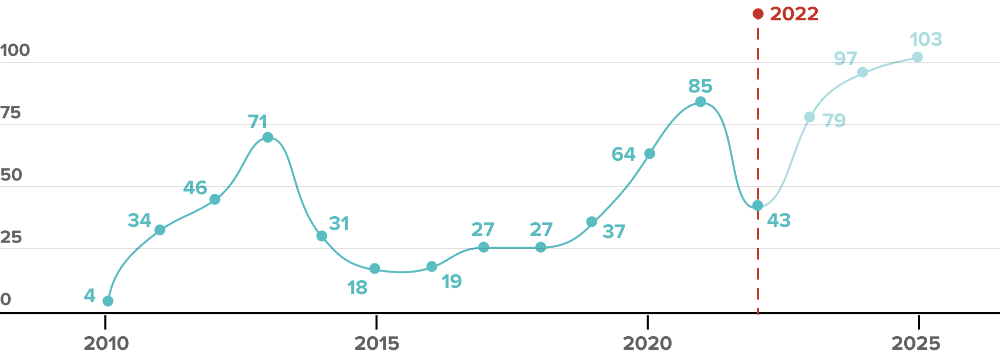
Объем транзитных грузов в 2010–2025 годах
в млн тонн
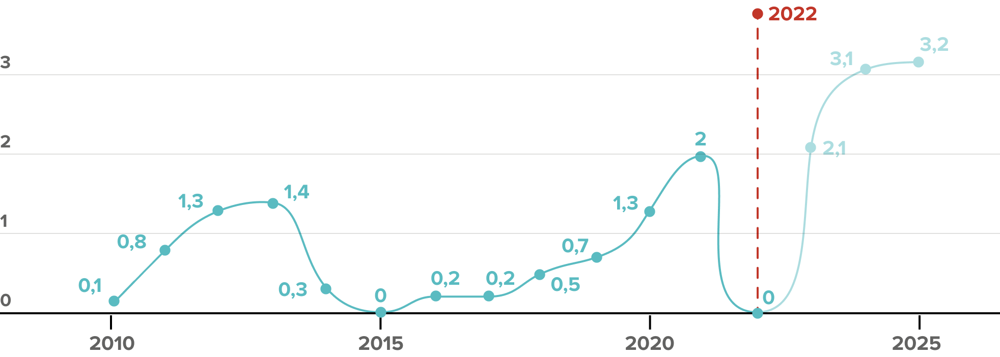
Между тем в строгом смысле слова международный транзитный рейс в 2025 году был один, и он стал первым с 2022 года. Это был экспериментальный рейс контейнеровоза Istanbul Bridge китайской компании Sea Legend из Нинбо в Феликстоу в сентябре-октябре.
Планы и проекты
Государственное планирование развития СМП сосредоточено в двух последних принятых документах — Плане развития СМП на период до 2035 года, проекте Большого СМП, а также в разработках комплексного плана «Развитие Арктической зоны Российской Федерации и Трансарктического транспортного коридора», который должен быть представлен президенту осенью 2026-го.
За последние четыре года проект многократно вырос по своему масштабу, хотя целевые показатели первых документов еще не выполнены либо выполняются с опозданием.
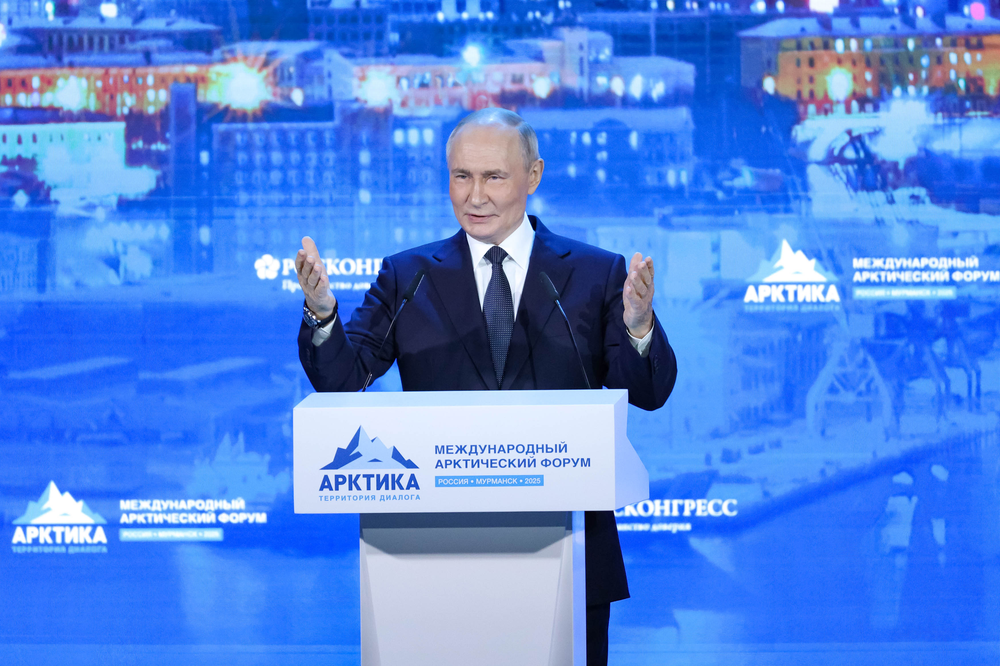
План развития Северного морского пути на период до 2035 года
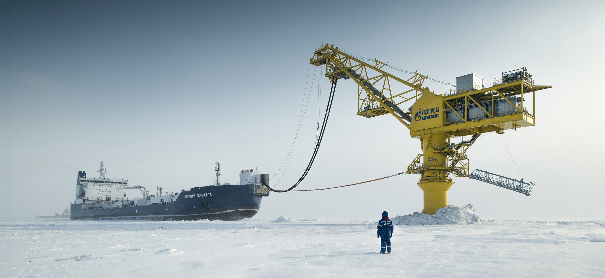
В августе 2022 года был утвержден масштабный и детальный План развития Северного морского пути на период до 2035 года, предполагавший переход к круглогодичной устойчивой навигации, с объемом финансирования свыше 1,8 трлн ₽, в том числе 620 млрд ₽ бюджетных средств.
Целевой грузопоток — 80 млн тонн к 2024 году, 110–150 млн тонн к 2030–2035-му, свыше 150 млн тонн к 2035-му. План был сверстан до начала СВО и не учитывал ее последствия, поэтому параметры программы пришлось скорректировать. Фактический грузопоток в 2024 году составил 37,9 млн тонн.
Развитие Большого Северного морского пути
В 2024 году «Росатом» вместе с другими госструктурами разработал федеральный проект «Развитие Большого Северного морского пути», который расширяет маршрут до 14 тыс. км — от Санкт-Петербурга до Владивостока. Целевой грузопоток — 109 млн тонн к 2030 году.
Трансарктический транспортный коридор
В марте 2025 года президент подписал распоряжение, трансформировавшее проект Большого СМП в еще более масштабную инициативу Трансарктического транспортного коридора (ТТК). Он объединит ключевые порты России: от Санкт-Петербурга и Калининграда на западе до Владивостока на востоке.
ТТК должен стать одним из ключевых элементов новой транспортной архитектуры Евразии, способным составить конкуренцию Суэцкому каналу.
Некоторые компоненты ТТК известны уже давно и либо находятся в статусе долгостроя, либо заморожены:
Другие задуманы недавно, в частности:
Специалисты отмечают недостаточную экспертную проработанность последних двух проектов, притом что глубоководный порт Найба уже начали строить в сентябре 2026 года.
К маршрутам через реки Сибири определенный интерес испытывает Китай, так как они теоретически сокращают протяженность пути, позволяют миновать Берингов пролив вдоль побережья США, а на Севморпуть выходят западнее самой сложной его части в Восточном секторе.
Трансарктический транспортный коридор
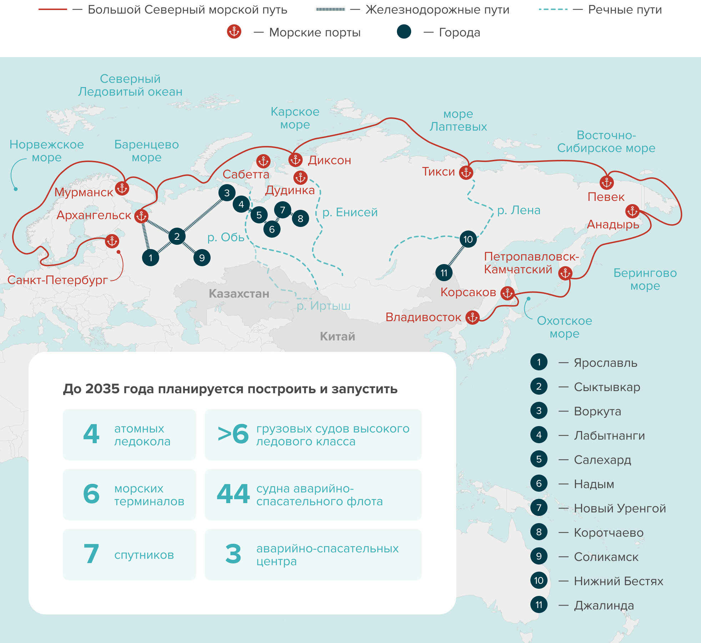
Финансово-экономическая модель развития Трансарктического транспортного коридора (ТТК) должна быть представлена президенту в начале осени и принята до конца 2026 года.
Ее поэтапную структуру и два сценария развития предварительно презентовал гендиректор «Росатома» Алексей Лихачев:
В комплексный план «Развитие Арктической зоны Российской Федерации и Трансарктического транспортного коридора» включен портфель из более чем трехсот проектов общей стоимостью 36 трлн ₽. Более 90% составят внебюджетные инвестиции.
На чем Лихачев строит свои смелые построения, для меня является большой загадкой. Я, к сожалению, имел возможность убедиться в том, что «Росатом» часто закладывает в основу своего планирования ничем не подкрепленные заявления компаний, например «Роснефти» про 100 млн тонн.
Эти цифры не то что нецелесообразны экономически, они просто непонятно откуда взялись. «Росатом» не публикует график развития грузопотока по годам. Есть некие заявления: наверное, в 2030 году мы будем перевозить от 70 до 110 млн тонн. Но если ты делаешь четкий инженерный расчет, то, безусловно, есть данные для каждого года, и ты можешь их представить.
По всем проектным документам растет объем грузопотока до 2035 года, а потом идет снижение, связанное с естественной выработкой месторождений. И необходимо уже в настоящее время интенсифицировать геологоразведочные работы для подготовки новых объектов для освоения, потому что лаг — порядка 10 лет. Но никто ничего не ускоряет.
Проблемы СМП и их решения
В целом практически все проблемы нынешнего СМП известны, и их решения закладываются в планы развития. Вопрос в том, насколько полно и своевременно они будут воплощены в жизнь без доступа ко многим технологиям и финансированию, а также при не до конца понятной окупаемости.
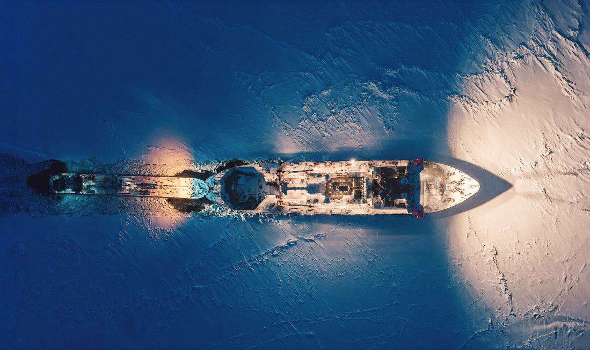
Сезонность — необходимость ледокольной проводки
Эксплуатация судов без ледового класса без постоянной ледовой проводки возможна в летне-осеннюю навигацию, с июля по октябрь. В зимне-весеннюю навигацию перевозчик сталкивается с движением во льдах, это значительно медленнее и требует дополнительных расходов.
Спецпредставитель «Росатома» по Арктике Владимир Панов рассказал летом 2026 года, что техническая возможность круглогодичной навигации в восточном направлении по Севморпути уже существует. Панов отметил, что не так давно проводились экспериментальные сверхранние и сверхпоздние рейсы газовозов, и проблемой сегодня является скорее коммерческая целесообразность, чем техническая готовность. В свою очередь председатель совета директоров китайской NewNew Shipping Фань Юйсинь отметила, что ее компания рассчитывает выйти на круглогодичную навигацию по Севморпути.
В 2031–2035 годах планируется перейти к регулярной круглогодичной навигации по СМП по караванной модели. Для проводки караванов планируется разместить атомные ледоколы через каждые 500 морских миль Севморпути, затем сократить это расстояние до 250 миль. Замгендиректора «Росатома» Вячеслав Рукша признал, что перспективы строительства такого количества атомоходов будут зависеть грузооборота арктических добывающих предприятий.
Летом ледоколы в Западном секторе не востребованы и могут работать в Восточном в интересах северного завоза, каботажа и транзита. Зимой же как минимум часть судов необходимы в Западном секторе, и привлечь их в Восточный гораздо сложнее.
Что касается сезонности, тут как раз вопрос о развитии круглогодичной навигации. Это решается прежде всего за счет строительства ледоколов нового поколения типа «Лидер». И после того как «Лидер» будет построен, последует расстановка ледоколов и переход к регулярной караванной модели.
Это позволит развивать Северный морской путь, потому что одна из ключевых проблем на текущий момент на фоне Суэцкого канала — короткое навигационное окно на СМП. Если мы сделаем его круглогодичным, это будет большим прорывом с точки зрения развития Северного морского пути и Трансарктического транспортного коридора.
Строится ледокол «Лидер», но очень сложно даже предсказать, насколько дорогой он будет в эксплуатации. Ледокол тоже стратегического назначения, уже есть публикации на эту тему. Он должен брать толщину льда четыре метра, притом что в Арктике сейчас максимально три с половиной. Такая задача, чтобы он мог пройти вообще где угодно, с моей точки зрения, тоже отвечает скорее стратегическим целям, а не экономическим.
Каждый следующий прирост проходимости и всесезонности стоит все дороже и дороже. Борьба за круглогодичность будет очень дорогой.
У «Совкомфлота» сейчас есть поручение, начиная с зимы этого года, начать круглогодичную навигацию на Восток. Но, по правилам, там могут ходить суда только от арктического ледового класса Arc-7, и то при условии ледокольного сопровождения в тяжелых ледовых условиях. А такого флота нет, даже в планах. В наличии три-четыре газовоза. Максимум, что может газовоз перевезти на Восток за год, — не более 1 млн тонн. Получается, что, поставив на Восток эти суда, мы в лучшем случае сделаем 4 млн тонн в год. Если же посмотреть стоимость сопровождения ледоколом через семь тарифных зон, это фантастические цены получаются. А круглогодичная навигация возможна, но она будет очень дорогой. Бриллиантовые будут грузы.
Требования к судам — ледовый класс и ограничение вместимости
Для навигации по СМП в зимне-весенний период и прохода по Восточному сектору суда должны иметь ледовое усиление, это существенно дороже, чем конвенциональная конструкция, а главное — такие суда в дефиците, и требуется расширение мощностей по их строительству.
Ограничение по осадке на отдельных участках составляет 12 метров, а по ширине — зависит от параметров канала за ледоколом. Для проекта 22220, например, это 30 метров. Крупногабаритные суда приходится проводить двумя ледоколами, которые идут ступенькой, но такое решение оплачивается по двойному тарифу.
В результате транспортировка единицы груза по СМП может оказаться существенно дороже, чем по другим маршрутам.
Непредсказуемость и ледовая навигация
Тяжелые льды на маршруте серьезно снижают предсказуемость сроков доставки. На современных контейнерных линиях ценится предельная пунктуальность, а судно, движущееся по СМП в сложных ледовых условиях, может опоздать на целую неделю.
Осенью 2021 года из-за неожиданно раннего и стремительного ледообразования более 20 судов оказались заблокированы во льдах в районе Певека на Чукотке. Суда не имели точного прогноза и вышли в рейсы без должного ледокольного сопровождения. Операция по их вызволению продлилась до января 2022 года.
Для полноценной предсказуемой навигации необходимы точные данные о движении и состоянии льдов. Доступ к снимкам с европейских и американских спутников утрачен из-за санкций. Российская группировка радиолокационных спутников («Кондор-ФКА» (№ 1 и № 2), «Обзор-Р» (№ 1)) пока формируется. Как признал заместитель генерального директора госкорпорации «Росатом» — руководитель Арктической дирекции Вячеслав Рукша, необходимый объем спутниковых данных ожидается только к 2028 году.
Главсевморпуть активно развивает тактическую разведку: три ледокола оснастили бортовыми ледовыми беспилотниками (БПЛА) для локального осмотра пути.
На основании всех этих данных ААНИИ и Главсевморпуть строят ледовые карты и математические прогностические модели. Создается Единая платформа цифровых сервисов СМП, одна из функций которой — составление прогнозов и безопасных маршрутов, а также контроль за прохождением судов — так называемый Ледовый навигатор.
Здесь все решается. Мы создаем систему цифровых сервисов и так называемый Ледовый навигатор, который сделает эксплуатацию Северного морского пути предсказуемой и безопасной. Соответственно, грузоотправители смогут четко понимать время и сроки доставки грузов, планировать свои перевозки, и вкупе с движением в сторону круглогодичной навигации у нас будут развиваться контейнерные перевозки.
Прогнозировать доставку по Севморпути с точностью до нескольких дней, а то и недель, к сожалению, пока невозможно. Именно из-за ледовой обстановки.
В Главсевморпути в Центре космического мониторинга недавно рассказывали про использование нового спутника «Обзор-Р». Новый продвинутый спутник, радиолокационный. Это как раз та съемка, которая позволяет оценить качество льда, ледовую ситуацию. Но, к сожалению, пока такой спутник только один. Хорошо, если их будет больше, однако в планах запусков не видно большого количества.
Спутниковая связь — запуск новой группировки
Спутниковая связь в высоких широтах крайне необходима. В Заполярье из-за удаленности от экватора сигнал геостационарных спутников очень нестабилен, а в Восточном секторе он вообще не ловится.
Стабильным средством остается Iridium, но скорость передачи данных у этой системы весьма невелика, а поставки оборудования ограничены санкциями.
Компания БЮРО 1440 строит низкоорбитальную группировку «Рассвет», аналог Starlink. Запуск сервиса ожидался в 2027 году, но у специалистов нет уверенности, что эти сроки будут соблюдены.
Система «Экспресс-РВ» планирует вывести на высокоэллиптическую орбиту четыре аппарата — первые два должны быть запущены до конца 2026 года.
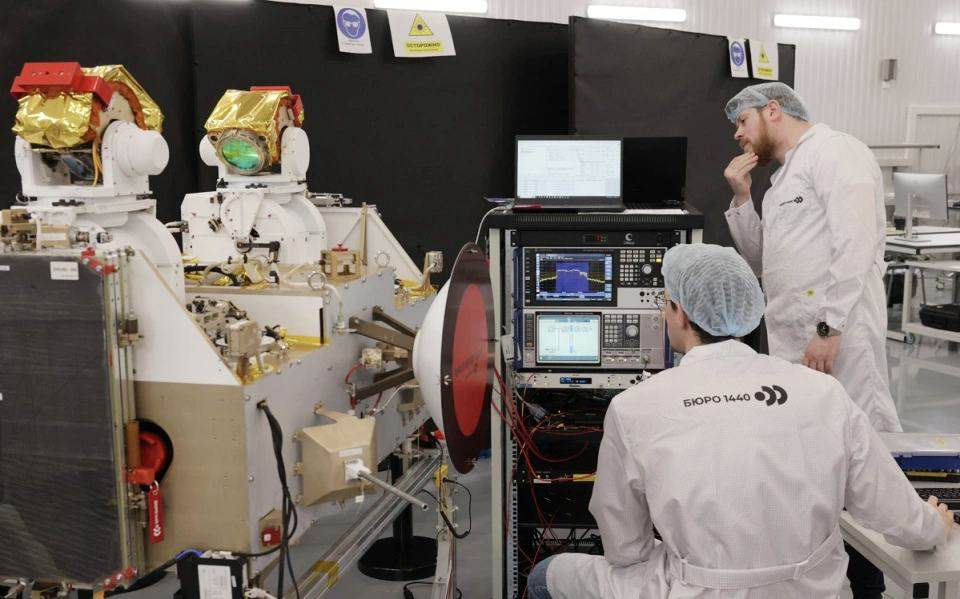
Неразвитость портовой инфраструктуры и аварийно-спасательных служб
Для надежной навигации по СМП необходимы модернизация старых и строительство новых портов с учетом современных требований по грузообработке и габаритам судов.
В планы развития СМП заложено кратное увеличение пунктов аварийно-спасательных служб.
Мелководье и дноуглубление
Прибрежная зона СМП и его ключевые точки — Обская губа, подходы к портам, проливы — мелководны и нуждаются в постоянной очистке дна.
Европейская «большая четверка» дноуглубительных компаний (Van Oord, Boskalis, Jan de Nul, DEME) прекратила работу в России и на объектах Северного морского пути (СМП) в феврале 2022 года. Поставлена задача — построить собственный дноуглубительный флот, в том числе — ледового класса.
Международное участие — развитие транзита
На данный момент наиболее активное участие в развитии Севморпути принимает КНР. Новые надежды на развитие инфраструктуры и привлечение клиентской базы связаны с участием Объединенных Арабских Эмиратов. Корея и Япония продолжают присматриваться к СМП, несмотря на осуждение Запада. Индия номинально проявляет интерес, но он сфокусирован на мониторинге изменений климата и обеспечении надежных поставок энергоресурсов. Тестовый рейс ожидается в 2027 году.
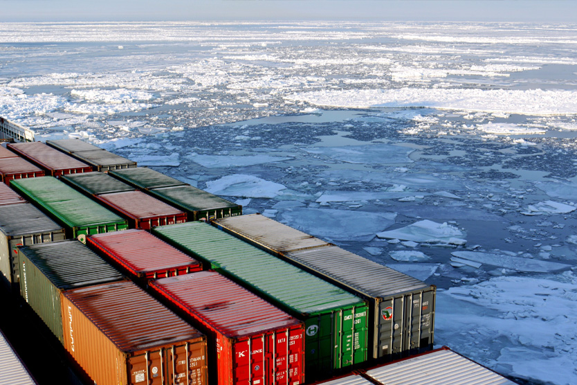
Китай
В 2017 году Китай заключил с Россией соглашение о Полярном Шелковом пути. Утвержден план мероприятий по развитию перевозок и достижению 20-миллионнотонного грузопотока по СМП между Россией и Китаем к 2030 году.
Два заметных китайских перевозчика на СМП — Sea Legend Shipping Line и NewNew Shipping Line.
В 2026 году Sea Legend объявила, что в летне-осеннюю навигацию запускает регулярные рейсы в порты северной Европы и надеется выполнить восемь переходов на семи различных контейнеровозах ледового класса вместимостью от 1528 до 4890 TEU.
NewNew Shipping Line в 2024 году запустила «Арктический экспресс № 1», который по СМП связал с Архангельском китайские порты Шанхай и Нинбо. В 2026 году компания планирует начать регулярные контейнерные перевозки из КНР в Санкт-Петербург с грузом автомобильных компонентов, а к 2027 году рассчитывает довести их объем до 1,2 млн тонн.
Перевозчик создал совместное с «Росатомом» предприятие по проектированию и строительству контейнеровозов ледового класса, а в ближайшей перспективе планирует подписать меморандум об участии в строительстве глубоководного района морского порта Архангельск.
Республика Корея
Южная Корея приняла закон «О содействии использованию Северного морского пути и развитию связанных отраслей». Министерство морских дел представило план подготовки к «эпохе Северного морского пути», которая начнется после 2030 года. Государство планирует поддерживать частных перевозчиков.
В августе PanStar Line отправила из Пусана в Феликстоу контейнеровоз PanStar Acro вместимостью 2758 TEU. Это первый пробный рейс южнокорейского контейнеровоза по арктическому маршруту и первое с 2016 года плавание судна Республики Корея по этому пути. Как сообщает Reuters, западные дипломаты пытались давить на Сеул, отговаривая пользоваться маршрутом, который контролирует Россия.
ОАЭ
Мощный импульс развитию полярной логистики может дать создание совместного предприятия «Росатома» и портового оператора DP World, контролирующего 40% контейнерных портов мира. Это партнерство должно привлечь клиентов на СМП и обеспечить стабильный рост грузопотока. Кроме того, СП получит доступ к специализированным контейнерным технологиям.
Кто вообще заинтересован в транзите по Севморпути? Восточная Азия: Китай, Корея, Япония. Они стоят на восточных воротах Севморпути, от них действительно есть короткий путь в Европу. Страны, расположенные южнее (Юго-Восточная Азия, Южная Азия), уже не заинтересованы в перевозках. Про Индию вообще говорить нельзя, там не было ни одного рейса. Я общался с Национальным морским фондом Индии, они говорят ясно и четко: нам все это не нужно. С точки зрения перевозок Северный морской путь никакого отношения к интересам Индии не имеет. Им интересно сырье, добываемое в Арктике.
В целом как транзитный маршрут СМП подходит для определенных грузов, для определенных ситуаций.
Это альтернативный, нишевый вариант транспортировки. Доставка точно в срок сейчас по Севморпути невозможна. А если нужно буксировать уникальную ледовую платформу где-то до конца сезона, из Мурманска куда-нибудь в Тихий океан, то это решаемая задача.
Севморпуть не является прямым конкурентом Суэцкому каналу, а представляет собой дополнительный транзитный маршрут. Здесь стоит посмотреть в сторону формирования многополярной логистической системы, где каждый маршрут займет свою нишу и будет хорошо развиваться.
И если мировая логистическая система получит альтернативу, еще один хороший вариант в виде Северного морского пути, то это сделает ее более устойчивой.
Выводы
-
Северный морской путь сохраняет свою главную роль — обеспечение северного завоза и добывающих проектов Арктики, при этом растет его значимость для связи России с Азией в условиях блокирования южного маршрута.
-
Для зарубежных перевозчиков в ближайшее десятилетие транзит по СМП не станет заменой маршрута через Суэцкий канал в Европу, но может оказаться нишевым транспортным коридором в летнюю навигацию или даже зимой, для определенных категорий грузов.
-
С ростом нестабильности на Ближнем Востоке и таянием арктических льдов ценность СМП может возрасти.
-
Планы развития СМП очень капиталоемки. Необходим реалистичный подход, в противном случае можно потерять крупные инвестиции.
-
Стоит выделить как минимум два подхода — прагматический, основанный на эффективной экономической модели развития мирного времени, и мобилизационный, «сделать любой ценой» ради сохранения/создания выходов на мировые рынки в экстремальных условиях, а также для легитимизации СМП как международного транспортного коридора под управлением РФ.
Однако мобилизационная модель не отменяет законов экономики, так что низкая эффективность и просчеты в планировании могут стать причиной срыва.